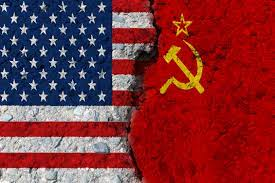

The Results of the Manhattan Project
The development of the first atomic bombs
The Manhattan Project was a secret research and development project that produced
the first atomic bombs during World War II. The project was led by the United States with the support of
the United Kingdom and Canada. From 1942 to 1946, the project was under the direction of Major General Leslie R.
Groves of the U.S. Army Corps of Engineers and was administered by the U.S. Department of War.
The end of World War II
The Manhattan Project was successful in developing two atomic bombs, which were used
against the Japanese cities of Hiroshima and Nagasaki in August 1945. The bombings resulted in
the deaths of an estimated 129,000 people, and they brought about the end of World War II.
The beginning of the nuclear age
The development of the atomic bomb ushered in the nuclear age, a new era in human history
that is characterized by the threat of nuclear war. The nuclear age has also seen the development
of nuclear power, which is a controversial source of energy.

The Cold War arms race
The development of the atomic bomb also led to the Cold War arms race, a period of intense
competition between the United States and the Soviet Union for nuclear superiority. The Cold War arms
race lasted for nearly 40 years and ended with the collapse of the Soviet Union in 1991.
Environmental contamination
The Manhattan Project also had a significant impact on the environment. The production of
nuclear weapons resulted in the release of radioactive materials into the environment, which have caused
widespread contamination. The environmental legacy of the Manhattan Project continues to be a source of concern today.